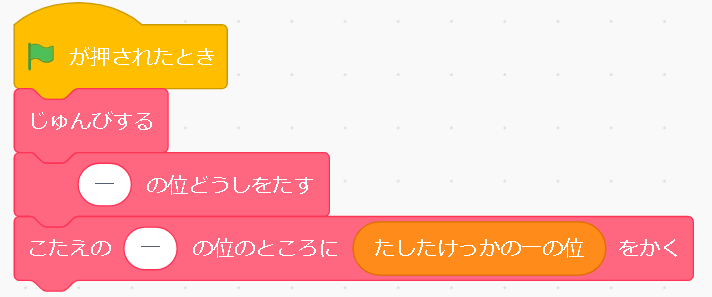
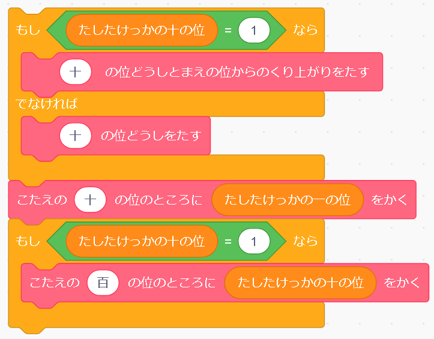

足し算の筆算

今回は、scratchで足し算の筆算のプログラムを作ります。 少しだけつなげるブロックが長いので、３年生でも進歩状況によれば３年生でも利用できると思います。このプログラムは、このデータをこのまま授業で使います。
完成したプログラムと解説 |
|
|  |
すでにプログラムされたブロックたちから見ていきます。 最初に組まれているのは、一の位の計算です。 ［準備する］は、とったらできませんので必ずつけます。 一のくらいどうしを足して、足した結果の一の位を書いています。 ここまでで実行すると一の位は計算してくれます。［たしたけっか…］に入っている数字は、その直前で足された計算の結果です。 次に私たちが組み立てる十の位以降のプログラムです。 |
|  |
まず、一の位の計算が終わったら、次に10のくらいを足します。 10の位の計算をするとき、 いつの時に繰り上がりをするのか、を判断します。 一桁同士の足し算は最大で１８（９＋９）つまり、一の位を足した結果の十の位が、 1より大きくなることはない、 つまり、足した結果の10の位が１の時は繰り上がりをして合計しなければなりません。 繰り上がりがない場合は、普通に足し算をします。 そして、足した数の一の位だけを下に書きます。 最後に、十の位が大きい数字の時も百の位に繰り上がりをしなければいけませんよね。 先ほどと同じように、10の位を足した結果の10の位が1なら、 繰り上がりをする、という命令を入れます。 |